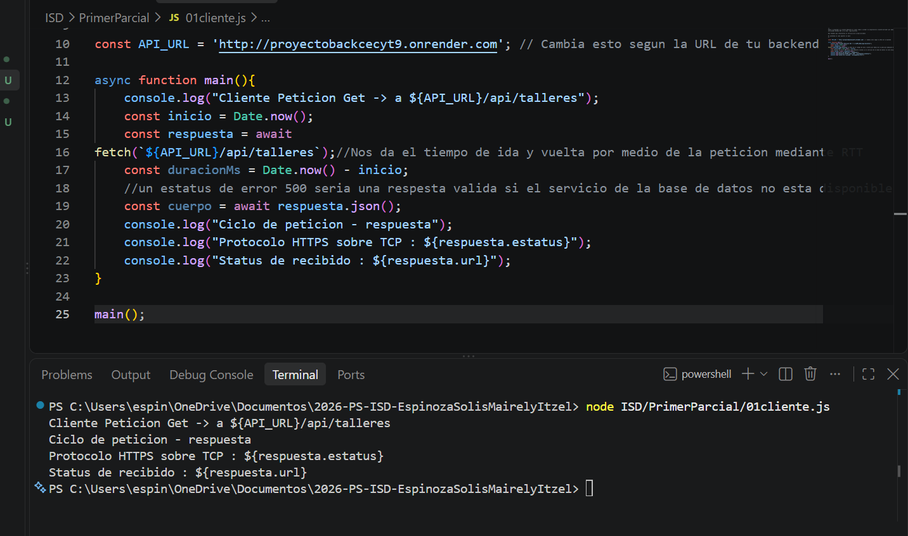

Petición GET

Explicacion:
-
En este ejercicio ejecute mi archivo
01cliente.js desde la terminal udando el Node y lo que hace el codigo es usar fetch para mandarle la peticion a la URL del backend y pedir la informacion
-
El servidor respondio sin problemas y se conecto sin problemas igual que la base de datos ya que no me salio ningun error
-
Al ver la respuesta en la consola de la terminal, pude ver los datos que mando el backend, el cual practicamente es un arreglo con toda la informacion que essta regustrada